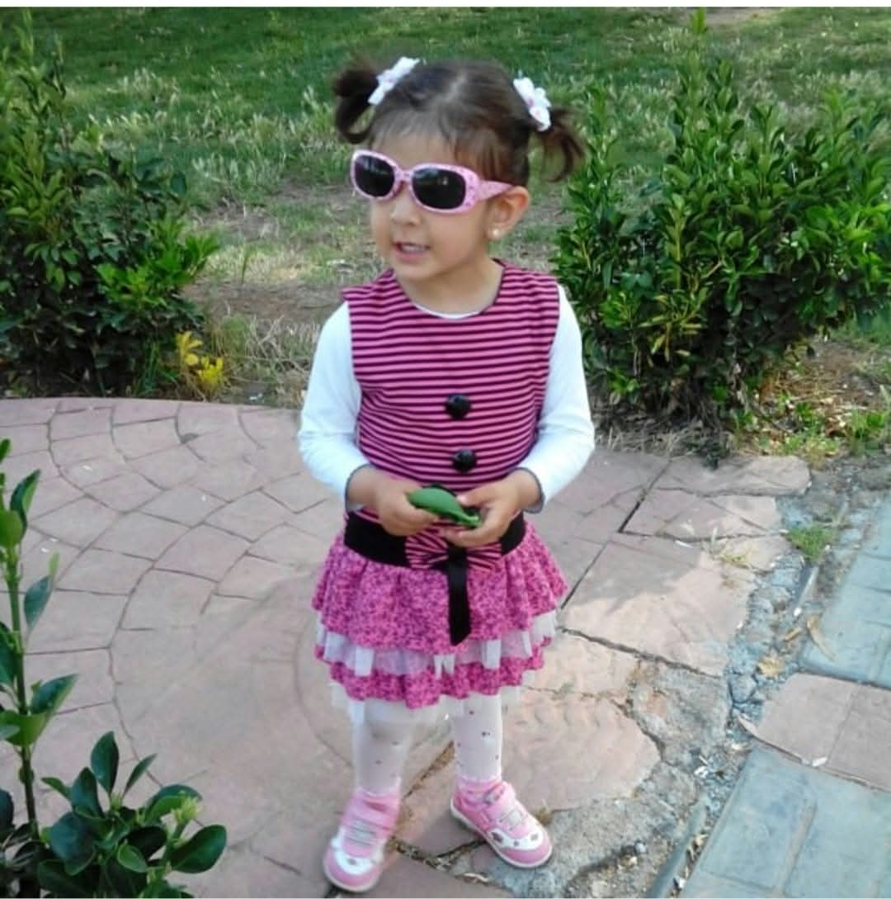
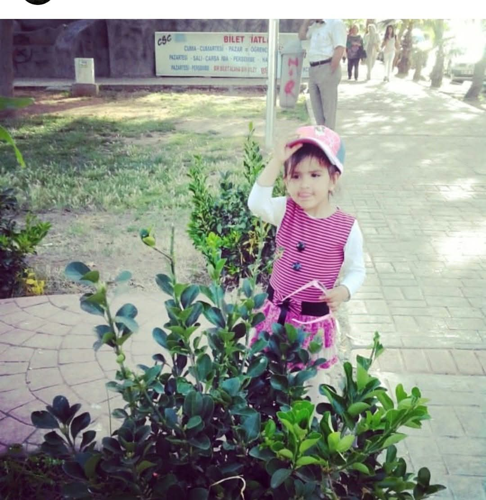
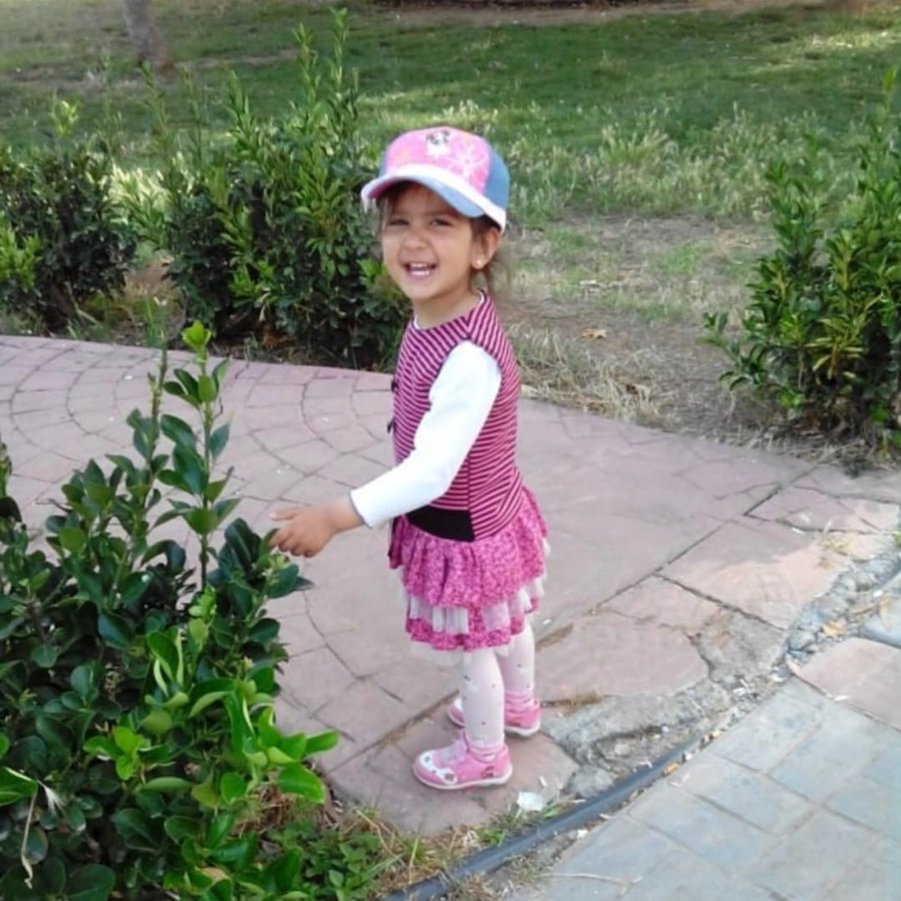
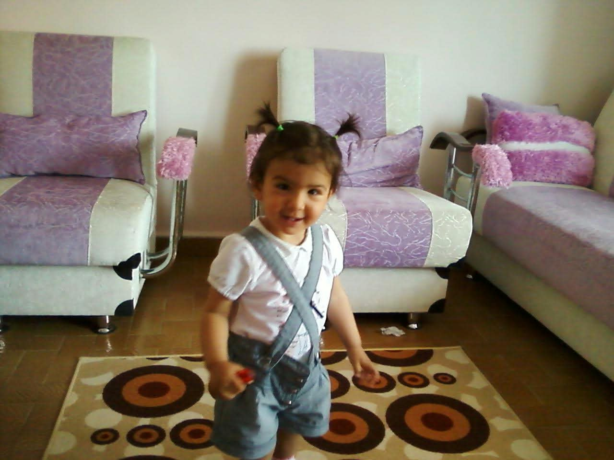
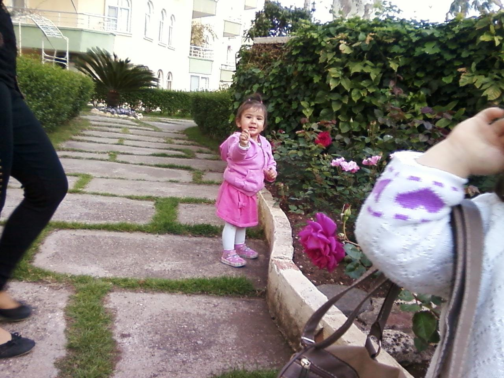
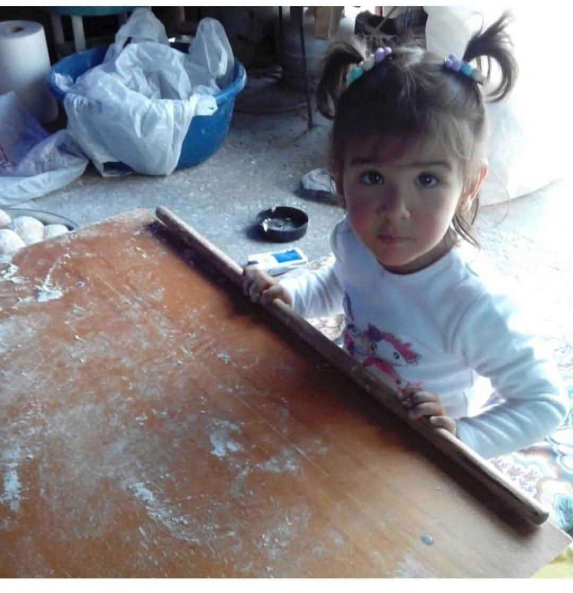
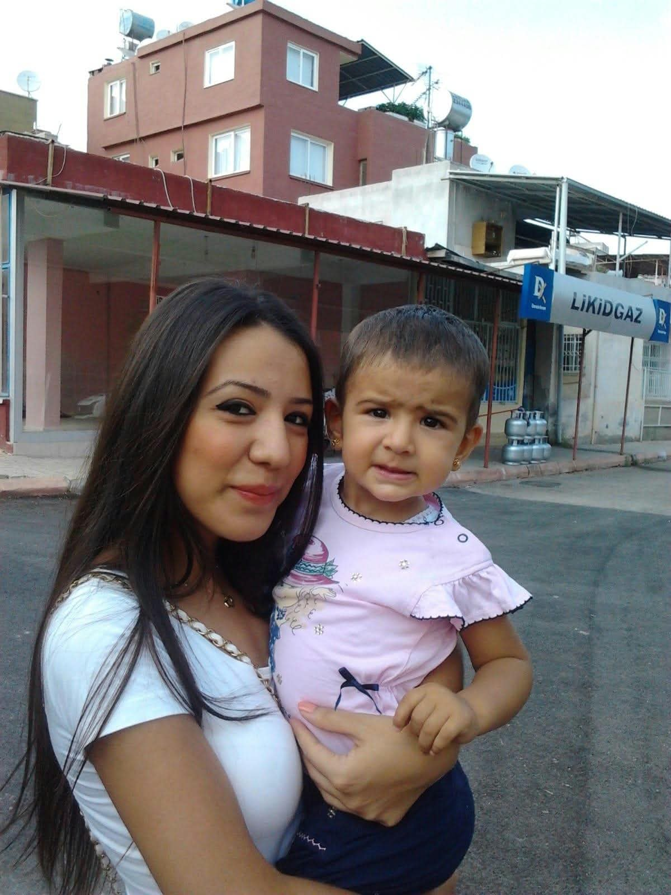

Merhaba,
ben Duru.
Kendi hâlinde yaşamayı seven ama içinde kocaman bir dünya taşıyan biriyim. Biraz duygusal, biraz inatçı, bolca hayalperest ve sanat tutkunu.
Biraz benden
“Küçük şeylerle mutlu olabilirim ama aynı küçük şeyleri saatlerce düşünüp kafama da takabilirim. Sanırım benim biraz böyle bir yanım var. :)”
İlkokulda okula çorba götürüp bütün çantama döktüğüm günü hâlâ dün gibi hatırlıyorum. Aradan yıllar geçti ama o çorbanın hatırası tebessümle benimle kaldı.
Kendimi bildim bileli biraz da sahipleniciyim; paylaşma konusunda çocukluğumdan beri pek başarılı olduğum söylenemez.
İzler & Hayallerim
-
auto_awesome Mersin'den Başlayan Yol
14 Şubat 2011Hayata gözlerimi açtığım gün. Kendi hâlinde yaşamayı seven ama hayal gücünü durduramayan bir çocukluk.
-
palette Dış Dünyadan Uzaklaşma: Sanat
SığınakKarakalem ve soyut çalışmalar yaparken hiçbir şeyi düşünmüyor, sadece çizgilerime odaklanıyorum. Sanat benim için sıradan bir hobi değil, bir terapi.
-
favorite Hiç Tanışamadığım Abim
İçimdeki YerHayatımda hiç tanışma fırsatım olmayan bir abim var. Bazen tanışsaydık nasıl anlaşırdık, nasıl dertleşirdik diye düşünürüm.
“Onunla yaşayabileceğim ama hiç yaşayamadığım o anılar, içimde hep çok ayrı bir yerde kalacak.” -
explore Gelecek ve Sergi Hayali
YarınlarFarklı bir ülkede yaşamak, kendi sergimi açmak en büyük hayalim. Kimya okumak da var aklımda, resim de. Zamanın bana hangi kapıyı açacağını merakla bekliyorum.
Elimde Kalan Anılar
Çocukluğumdan geriye kalan en samimi kareler.







Dünyam & Şu an
İnsanlarda en çok empatiye, anlayışa ve güvene değer veririm. Kalabalık ortamlar yerine kendi köşemde kalmayı tercih ederim.
© 2026 Duru Çakır